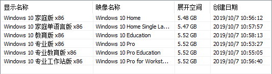
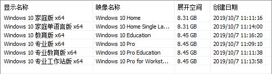
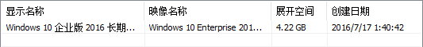
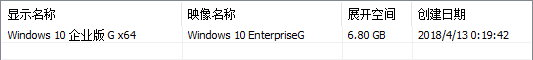

首页
公告
Win/Office链接
使用教程
激活专区
装机必备
软件推荐
视频
当前位置：
首页
→
Win/Office链接
→
Windows10
Windows 10 下载链接
Win10_1909（最新，稳定）
32位：
ed2k://|file|cn_windows_10_consumer_editions_version_1909_x86_dvd_08dd0d3c.iso|3859558400|40991568D016CCBAEE1E67CD38FAABE8|/
镜像包含：

64位：
ed2k://|file|cn_windows_10_consumer_editions_version_1909_x64_dvd_76365bf8.iso|5381154816|6A56DE112B164EC054D1104C53F8F10B|/
镜像包含：

Win10_LTSB_2016
32位：
ed2k://|file|cn_windows_10_enterprise_2016_ltsb_x86_dvd_9057089.iso|2817034240|67C3865D03E765BDD4845BA2CB7649F8|/
镜像包含：

64位：
ed2k://|file|cn_windows_10_enterprise_2016_ltsb_x64_dvd_9060409.iso|3821895680|FF17FF2D5919E3A560151BBC11C399D1|/
镜像包含：
Win10_CMGE_V0-H（神州网信政府版，版本1803）
获取官网下载链接：
1、打开
官网下载页面
2、输入SN码：FF00010020560658
3、点击下载
注意：官网获取的链接有时效性，建议使用上方的ed2k链接下载。
64位：
ed2k://|file|CMGE_V0-H.1020.iso|4015577088|181AEB02F38B0CD20103010E4979897D|/
镜像包含：
